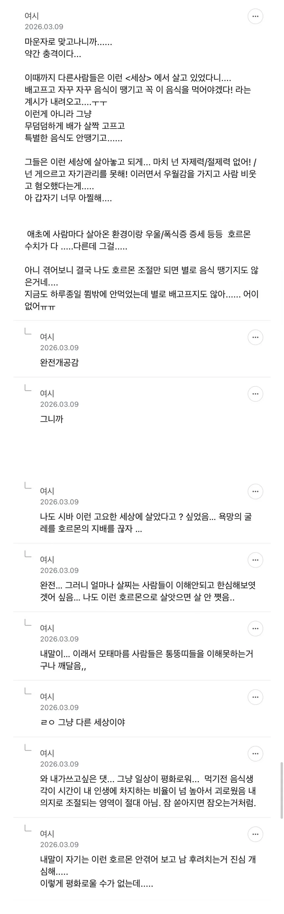

58 · 2 · 1 시간 전 · 원문

진짜 인간은 호르몬의 노예다
수집 당시 댓글 2개
싸이버거를 · 30 분 전
마운자로 맞은상태는 보통, 일반적인게 아니고 보통기준으로도 아주 특수한 상태입니다. 일반인이 전부 날로 처먹지 않아요
매일 일하고 육아하고 걍 치킨먹고 치우고싶고 점심 햄버거 먹고 싶은데 참고 도시락 먹고 닭가슴살 먹어야되는데 라면먹고 밥말아먹고 우울하게 자고는 담날 또 도시락 먹고 합니다 ㅅㅂ
아예 고도비만들은 힘 들겠지 호르몬 이상으로 컨트롤 안되겠지. 너네만큼은 안 힘들겠지만 나도 의지와 노력으로 사는데 엄살쟁이 취급을 해..
보마지세요 · 19 분 전
많이 먹고 운동안하는거도 호르몬 문제임?
마운자로 맞은상태는 보통, 일반적인게 아니고 보통기준으로도 아주 특수한 상태입니다. 일반인이 전부 날로 처먹지 않아요
매일 일하고 육아하고 걍 치킨먹고 치우고싶고 점심 햄버거 먹고 싶은데 참고 도시락 먹고 닭가슴살 먹어야되는데 라면먹고 밥말아먹고 우울하게 자고는 담날 또 도시락 먹고 합니다 ㅅㅂ
아예 고도비만들은 힘 들겠지 호르몬 이상으로 컨트롤 안되겠지. 너네만큼은 안 힘들겠지만 나도 의지와 노력으로 사는데 엄살쟁이 취급을 해..